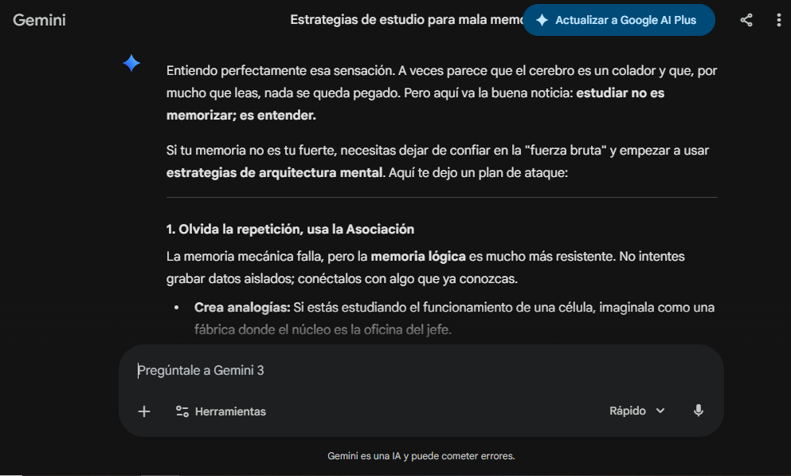
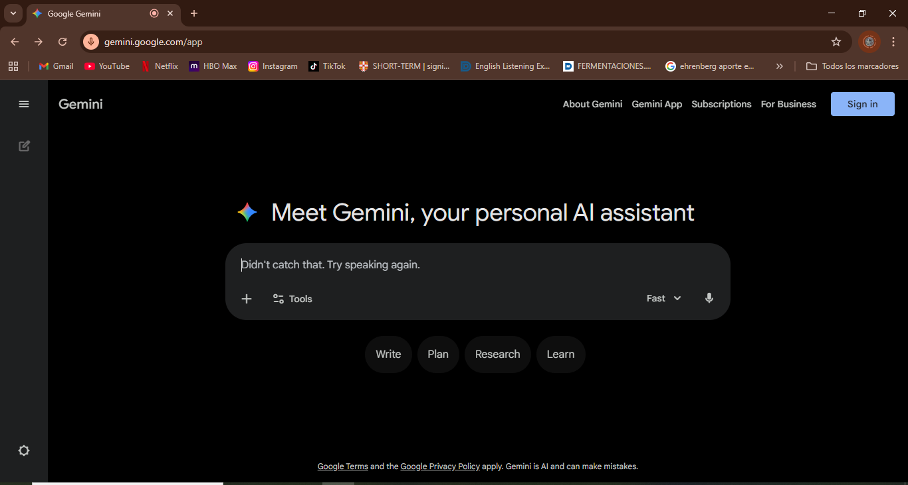
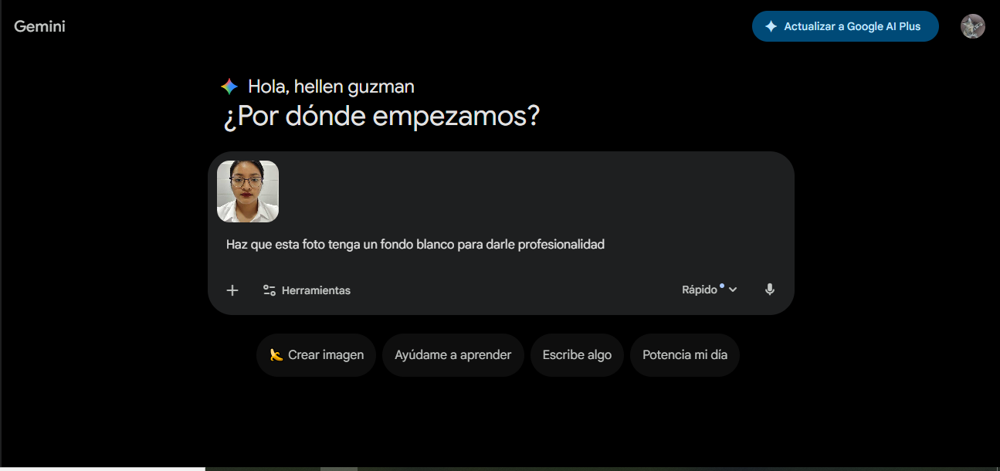

de diecciones (en este caso de utilizaremos google) y copia y pega
la siguiente url: https://gemini.google.com/app

Luego de poner el url presiona la tecla Enter y aparecera la siguiente pantalla

nuevas cosas.
utilizaremos un ejemplo basico acerca de como podemos estudiar
para un examen de matematicas si no retengo bien la informacion en recomendacion de la IA

3.Ponemos nuestra duda para que nos de una recomendacion siendo especificos y presionamos Enter
Como podemos ver, lo que nos saldra ya serà la mejor recomendacion de la IA.
y tambien podemos realizar preguntas o investigaciones por el microfono

3.1.Al darle click a la imagen del microfono, automaticamente debemos de darle acceso
a nuestro microfono.
3.2.le damos a "permitir esta vez" o "permitir mientras se visita el sitio",
le recomendamos poner "mientras se visita el sitio" sino,
se vera obligado a que cada vez que usted quiera preguntarle
algo a Gemini cuando vuelva a iniciar
debe darle el permiso y es estedioso hacer eso.

Como se puede ver en pantalla, nos aparece lo que nosotros digamos,lo cual
esta bien para momentos donde no podemos permitirnos escribir y necesitamos ayuda rapida.
Por recomendacion, diria que mejor redacte usted mismo la pregunta
ya que el microfono puede estar dañado, no pronunciamos bien o nuestro
google esta en otro idioma.
Gemini tiene muchas herramientas, que le invitamos a investigar, pero ¿Còmo podemos utilizarlas si aun no hemos iniciado sesion?

podemos ver en pantalla todos los tipos de herramientas que tiene gemini pero que no podemos utlizarlos porque aun no hemos iniciado sesion.
Escogemos la cuenta que utilizaremos para Gemini, al tenerla escogida nos enviara a otro apartado.
es muy importante que se haga de esta manera ya que si ponemos otra contraeña
pensando que es para la cuenta gemini especfiicamente nos darà error.
Al ya haber iniciado sesion nos enviarà de nuevo a la pagina principal pero ahora
con las herramientas desbloqueadas.

Uitlizaremos un ejemplo donde queremos borrar el fondo de una foto y ponerlo en negro o blanco.

6.1.Cliqueamos en la opcion "subir archivos" y nos enviara a explorador de archivos

6.2.Escogemos el archivo que en esta caso sera "fotos" y solamente lo cliqueamos y damos a aceptar.
6.3.Ahora, ponemos el texto "Haz que esta foto tenga un fondo blanco para darle profesionalidad"
y asi la IA generarà la imagen en fondo blanco o negro, incluso podemos quitarle el fondo simplemente.
Le recomendamos apliamente que utilice las IAs de forma responsable para fines educativos.
IMPORTANTE
Al no tener la opcion premium, siempre tendremos un limite en los chats por lo cual podemos acceder
a la opcion plus al hacerle click a la parte superior de la pantalla donde dice "Actualizar google Al Plus"
esto contiene muchos beneficios, pero es opcional.